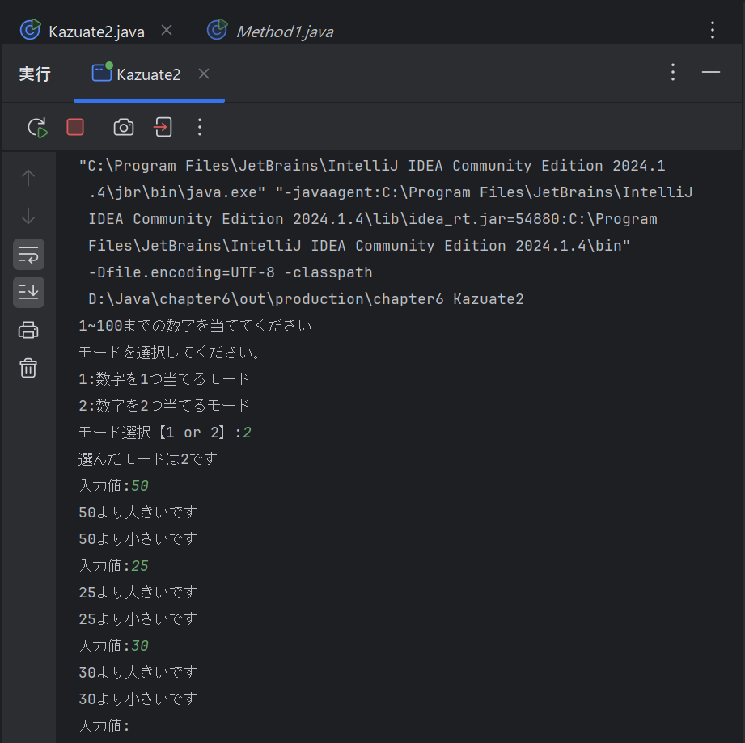
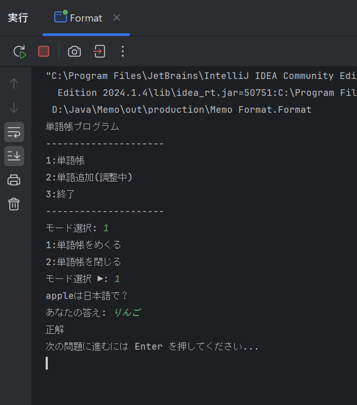
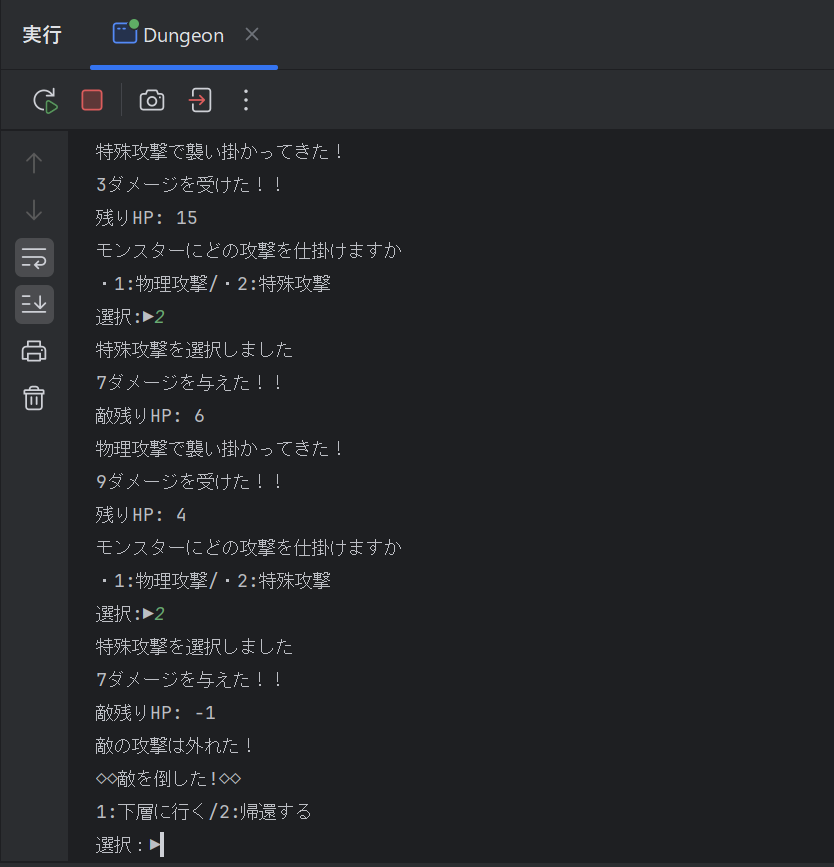
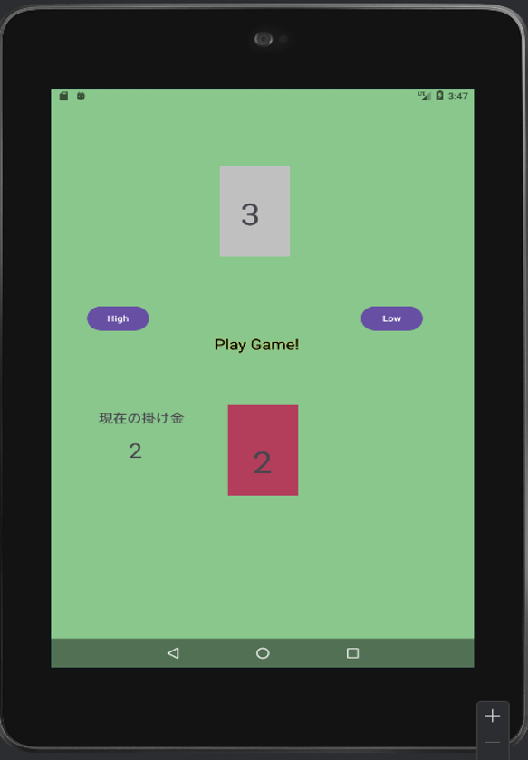

・数字当てゲーム |
||
|  |
数字を１つ当てるモードと2つ当てるモードを作成。 文でループ構造を作り数字を当てるとプログラムを終了し、 数字当てが終わるまでに何度数字を入力したか結果を表示する簡単なプログラムを作成しました。 授業内で作成した１つ数字を当てるプログラムを再構築して、２つ当たった際にプログラム終了するように改良しました。 |
・単語帳アプリ |
||
|  |
単語帳プログラミング。 単語パッケージの問題集から、ランダムに問題を出題して、 それを回答させ成否を判断するプログラムを作成しました。 Switch文で問題を記述しているために問題の作成が容易になっている工夫を施しています。 所感Javaを学びだしてから実際どのような活用法がこの言語にはできるのだろうかと、 素人ながらに考えてこれまで習ったものを活用して作ったプログラミング作品の第１作品目。 特に難しかった点は、他のメソッドでも問題と解答を示し合わせて合否の参照を行うコーディングを考えるのと実際そのコードを練るのが難しかったです。 今後の課題点としては、キーボードの２を押すことでExcelなどの外部機能と連携させて問題の追加などを行えたら良かったと感じます。 |
・ロジックダンジョンゲーム |
||
|  |
文字で表すRPGの様なゲームプログラミング。 プレイアブルキャラクターを選び、ダンジョンに潜る。 その中で、いくつかのモンスターとのバトルを行い戦ってダンジョンのどの階層まで潜っていけるかを競うプログラム。 所感Java講義の集大成として作った簡単なゲームのようなプログラミング。 特に難しかった点は、多くのパッケージとクラスでモンスターや、キャラクターの変数内の数値を保持しながら駆使していくためのコーディングを考える点と実際組んでみて全く機能しなくて何度も振出しに戻ることもありその部分の修正のみで１～２週間費やしたりといった苦難があった。 今後の課題としては、敵を倒した際に経験値などを実装してプレイアブルキャラクターのLV.制度などを実装出来たらと思いました。 |
・High＆Low ゲーム |
||
|  |
ハイ＆ローゲーム 手持ちのランダム生成された値のカードと相手のカードの数値を高いか、低いかを競い、 掛け金をどこまで増やせるかを楽しむシンプルなカードゲーム。 所感Android Studio の製作１作品目。 Android Studioがかなり優秀で、考え方さえわかれば、あとは予測記述で何とか作れたが、 やはりAndroid Studioならではの考え方やコードを考えるのが難しく感じた。 これまで学んだJavaの考え方も多く流用できる場面もあり、 掛け金を累乗で増やすメソッドなどをその考え方で制作を行うことが出来た。 |